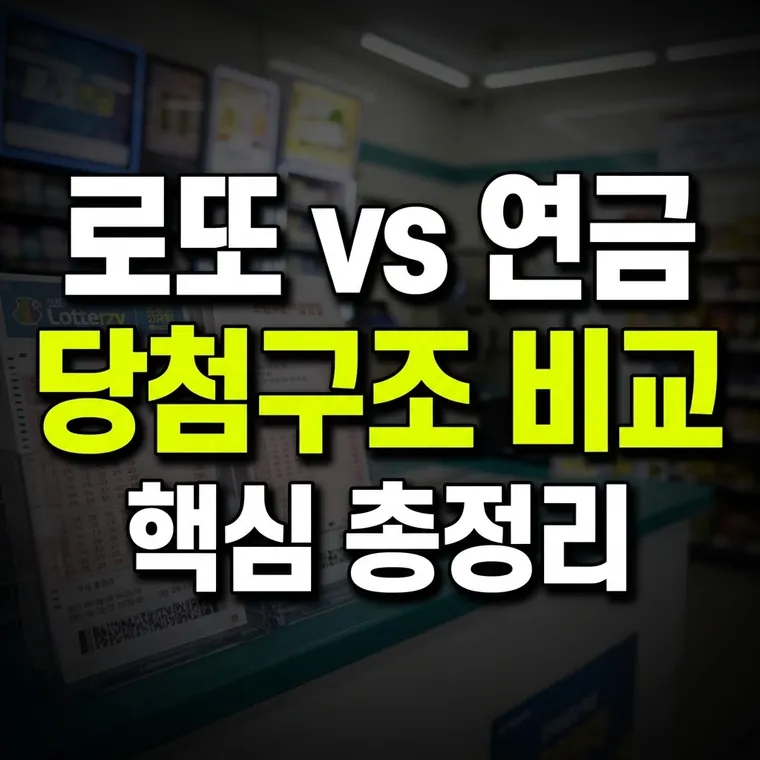

연금복권720+ vs 로또 6/45 비교: 당첨 구조, 세율, 수령 방식의 근본적 차이점
로또 6/45는 1등이 약 814만 분의 1이고 일시불로 받으며, 연금복권720+는 약 500만 분의 1이고 월 700만 원씩 20년간 받습니다. 세금도 로또는 3억 원 초과분 33%, 연금복권은 월 지급액 기준 22%로 다릅니다.

복권의 양대 산맥, 로또와 연금복권의 선택 고민
국내에서 가장 대중적인 복권을 꼽으라면 단연 매주 토요일 당첨자가 발표되는 로또 6/45와, 매주 목요일 추첨을 진행하는 연금복권720+를 들 수 있습니다.
많은 사람들이 편의점이나 판매점에서 복권을 구매할 때 "이번 주는 어떤 것을 살까?" 고민하며 두 복권의 특징을 비교하곤 합니다. 하지만 단순히 당첨 금액의 크기나 추첨 요일만 보고 복권을 선택하기에는 두 복권의 수학적 당첨 확률, 당첨금 수령 방식, 그리고 적용되는 세금 체계에서 매우 큰 차이를 보입니다.
이번 글에서는 로또와 연금복권의 근본적인 구조적 차이를 면밀히 비교해 보고, 각 복권이 가진 특징을 객관적으로 짚어보겠습니다.
당첨 구조와 확률의 근본적 차이 분석
두 복권은 당첨 번호가 결정되는 방식과 확률 면에서 완전히 다른 시스템을 채택하고 있습니다.
- 로또 6/45의 당첨 구조: 1부터 45까지의 숫자 중 6개를 맞추는 방식입니다. 1등 당첨 확률은 약 814만 분의 1로 고정되어 있습니다. 구매자가 직접 번호를 수동으로 고르거나 자동 시스템에 맡길 수 있으며, 당첨금은 해당 회차의 총판매 금액과 1등 당첨자 수에 따라 매번 변동되는 방식입니다.
- 연금복권720+의 당첨 구조: 조 번호(1조~5조)와 6자리 숫자를 모두 일치시켜야 하는 방식입니다. 1등 당첨 확률은 500만 분의 1로, 로또에 비해 수학적 당첨 확률이 상대적으로 높습니다. 또한 판매점에서는 인쇄된 번호 중에서 선택해 구매하는 구조이고, 각 등수별 당첨금이 고정되어 있는 것이 가장 큰 특징입니다.
당첨금 수령 방식과 세금 체계의 차이점
당첨 이후 실수령액과 자금 수령 방식에서 오는 차이는 재무 계획을 세울 때 중요한 요소입니다.
수령 방식의 형태: 로또 1등 당첨금은 세금을 공제한 후 일시불로 전액 지급됩니다. 한 번에 큰 목돈이 들어오기 때문에 자산 관리에 대한 계획이 없으면 급격한 지출로 이어질 위험이 있습니다. 반면 연금복권720+ 1등 당첨금은 매달 700만 원씩 20년 동안 분할하여 총 16억 8천만 원이 지급되며, 2등은 매달 100만 원씩 10년간 지급됩니다. 안정적인 현금 흐름을 만들어 준다는 점에서 차이가 있습니다.
세율 적용의 차이: 복권 당첨금은 소득세법상 기타소득으로 분류되어 지급 단계에서 원천징수됩니다. 200만 원 이하는 비과세이고, 200만 원 초과 3억 원 이하는 22%, 3억 원 초과분은 33%(지방소득세 포함)가 적용됩니다.
- 로또 1등은 당첨금이 통상 수억~수십억 원이어서 3억 원을 넘는 부분에 33%가 적용됩니다.
- 연금복권720+ 1등은 월 700만 원씩 나눠 지급되고 지급액 기준으로 22%가 적용되어, 세금을 뗀 실수령액은 월 약 546만 원입니다.
두 복권을 비교할 때 알아둘 점
- 정확한 수치로 비교하기: 확률(814만 분의 1 vs 500만 분의 1)과 지급 방식(일시불 vs 월 700만 원 20년 분할)을 정확한 사실로 비교해야 합니다.
- 재무적 관점도 함께 보기: 목돈 수령과 연금형 수령은 장단점이 다릅니다. 각자의 상황에 맞게 이해해 두면 복권의 특성을 깊이 있게 파악할 수 있습니다.
- 소액 오락으로 접근하기: 복권은 자산 증식의 수단이 아니라 가벼운 오락과 희망을 사는 문화입니다. 과도한 몰입은 경계해야 합니다.
두 복권은 확률, 수령 방식, 세금이 모두 다르니 자신에게 맞는 방식을 이해한 뒤 소액으로 가볍게 즐기세요.
· 로또 6/45는 일시불 수령과 변동 당첨금을 가지며, 연금복권720+는 월 700만 원씩 20년 분할 고정 지급 형태입니다.
· 1등 당첨 확률은 로또가 약 814만 분의 1, 연금복권이 약 500만 분의 1로 연금복권이 상대적으로 높습니다.
· 세금은 로또 3억 원 초과분 33%, 연금복권은 월 지급액 기준 22%가 적용되어 수령 방식에 따라 체감 금액이 달라집니다.
이 글의 기준과 예시는 2026년 10월 기준입니다. 법령이나 제도가 바뀌면 내용이 달라질 수 있으니, 신청·신고·계약 전에는 해당 기관에서 최신 기준을 확인하세요. 세금에 대한 구체적인 판단은 국세청이나 세무 전문가에게 확인하세요. 계산 결과와 설명은 참고용입니다.
🔮 다음 글 예고
다음 글에서는 로또 복권 용지를 보관하고 관리하는 방법과 감열지 훼손 방지 체크리스트를 다룹니다.